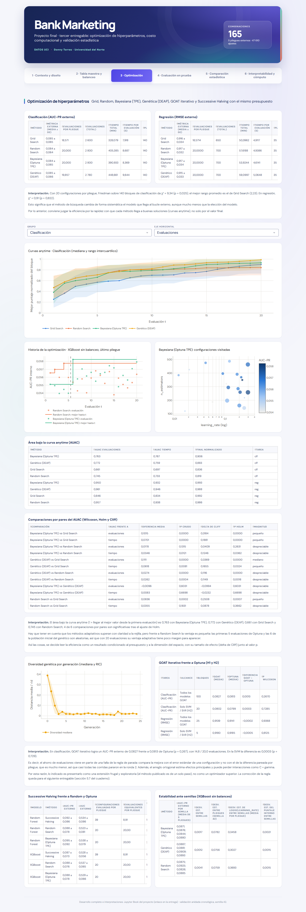

Pestaña 3 · Optimización de hiperparámetros#
La tercera pestaña compara los métodos de optimización con el mismo presupuesto: la métrica del bucle externo, el costo, la convergencia (curvas anytime) y la eficiencia por unidad de presupuesto.

Las figuras son interactivas (se puede pasar el cursor sobre ellas) y las interpretaciones usan las mismas cifras que el dashboard y que el cuaderno.
3.1 Métrica externa, tiempo y evaluaciones por método#
| Método | Métrica externa (media ± DE) | Evaluaciones por pliegue | Evaluaciones (total) | Tiempo total (min) | Tiempo por evaluación (s) | Pliegues |
|---|---|---|---|---|---|---|
| Grid Search | 0,085 ± 0,065 | 18,571 | 2 600 | 328,079 | 7,918 | 140 |
| Random Search | 0,084 ± 0,064 | 20,000 | 2 800 | 405,385 | 8,687 | 140 |
| Bayesiana (Optuna TPE) | 0,084 ± 0,065 | 20,000 | 2 800 | 390,933 | 8,369 | 140 |
| Genético (DEAP) | 0,085 ± 0,066 | 19,857 | 2 780 | 448,661 | 9,644 | 140 |
| Método | Métrica externa (media ± DE) | Evaluaciones por pliegue | Evaluaciones (total) | Tiempo total (min) | Tiempo por evaluación (s) | Pliegues |
|---|---|---|---|---|---|---|
| Grid Search | 0,916 ± 0,034 | 18,5714 | 650 | 50,3962 | 4,9117 | 35 |
| Random Search | 0,917 ± 0,032 | 20,0000 | 700 | 57,6188 | 4,9386 | 35 |
| Bayesiana (Optuna TPE) | 0,917 ± 0,034 | 20,0000 | 700 | 53,9244 | 4,6141 | 35 |
| Genético (DEAP) | 0,915 ± 0,033 | 20,0000 | 700 | 59,0997 | 5,0648 | 35 |
Interpretación. Con 20 configuraciones por pliegue, Friedman sobre 140 bloques de clasificación da χ² = 9,34 (p = 0,025); el mejor rango promedio es el de Grid Search (2,23). En regresión, χ² = 0,91 (p = 0,822).
Esto significa que el método de búsqueda cambia de forma sistemática el modelo que llega al bucle externo, aunque mucho menos que la elección del modelo.
Por lo anterior, conviene juzgar la eficiencia por la rapidez con que cada método llega a buenas soluciones (curvas anytime), no solo por el valor final.
3.2 Curvas de desempeño en cualquier momento#
3.3 Eficiencia cuantitativa#
| Método | AUAC evaluaciones | AUAC tiempo | Final normalizado | Tarea |
|---|---|---|---|---|
| Bayesiana (Optuna TPE) | 0,773 | 0,777 | 0,920 | clf |
| Genético (DEAP) | 0,781 | 0,768 | 0,895 | clf |
| Grid Search | 0,670 | 0,706 | 0,847 | clf |
| Random Search | 0,753 | 0,741 | 0,830 | clf |
| Bayesiana (Optuna TPE) | 0,943 | 0,926 | 0,993 | reg |
| Genético (DEAP) | 0,954 | 0,940 | 0,986 | reg |
| Grid Search | 0,842 | 0,830 | 0,990 | reg |
| Random Search | 0,949 | 0,931 | 0,982 | reg |
| Comparación | AUAC frente a | Diferencia media | p crudo | delta de Cliff | p Holm | Magnitud |
|---|---|---|---|---|---|---|
| Bayesiana (Optuna TPE) vs Grid Search | evaluaciones | 0,1034 | 0,0000 | 0,3286 | 0,0000 | pequeño |
| Bayesiana (Optuna TPE) vs Grid Search | tiempo | 0,0707 | 0,0000 | 0,1856 | 0,0000 | pequeño |
| Bayesiana (Optuna TPE) vs Random Search | evaluaciones | 0,0196 | 0,1305 | 0,0425 | 0,2610 | despreciable |
| Bayesiana (Optuna TPE) vs Random Search | tiempo | 0,0360 | 0,0126 | 0,1240 | 0,0377 | despreciable |
| Genético (DEAP) vs Grid Search | evaluaciones | 0,1118 | 0,0000 | 0,3381 | 0,0000 | mediano |
| Genético (DEAP) vs Grid Search | tiempo | 0,0615 | 0,0079 | 0,1578 | 0,0314 | pequeño |
| Genético (DEAP) vs Random Search | evaluaciones | 0,0280 | 0,0000 | 0,1265 | 0,0000 | despreciable |
| Genético (DEAP) vs Random Search | tiempo | 0,0268 | 0,0004 | 0,1288 | 0,0019 | despreciable |
| Bayesiana (Optuna TPE) vs Genético (DEAP) | evaluaciones | -0,0084 | 0,6622 | -0,1044 | 0,6622 | despreciable |
| Bayesiana (Optuna TPE) vs Genético (DEAP) | tiempo | 0,0092 | 0,6279 | -0,0309 | 0,6279 | despreciable |
| Random Search vs Grid Search | evaluaciones | 0,0839 | 0,0002 | 0,2561 | 0,0007 | pequeño |
| Random Search vs Grid Search | tiempo | 0,0347 | 0,1986 | 0,0868 | 0,3972 | despreciable |
Interpretación. El área bajo la curva anytime (1 = llegar al mejor valor desde la primera evaluación) es 0,773 con Bayesiana (Optuna TPE), 0,781 con Genético (DEAP), 0,670 con Grid Search y 0,753 con Random Search; 4 de 6 comparaciones por pares son significativas tras el ajuste de Holm.
Hay que tener en cuenta que los métodos adaptativos superan con claridad a la rejilla, pero frente a Random Search la ventaja es pequeña: las primeras 5 evaluaciones de Optuna y las 6 de la población inicial del genético son aleatorias, así que con 20 evaluaciones su ventaja adaptativa tiene poco margen para aparecer.
Así las cosas, se decide leer la eficiencia como un resultado condicionado al presupuesto y a la dimensión del espacio, con su tamaño de efecto (delta de Cliff) junto al valor p.
3.4 Genético, multi-fidelidad y semillas#
| Modelo | Método | AUC-PR externo | AUC externo | Configuraciones evaluadas por pliegue | Evaluaciones equivalentes por pliegue | Tiempo por pliegue (s) |
|---|---|---|---|---|---|---|
| Random Forest | Successive Halving | 0,092 ± 0,086 | 0,534 ± 0,086 | 39,00 | 8,91 | 149,27 |
| Random Forest | Random Search | 0,088 ± 0,078 | 0,523 ± 0,081 | 20,00 | 20,00 | 207,35 |
| Random Forest | Bayesiana (Optuna TPE) | 0,095 ± 0,092 | 0,538 ± 0,079 | 20,00 | 20,00 | 282,27 |
| XGBoost | Successive Halving | 0,087 ± 0,073 | 0,528 ± 0,056 | 39,00 | 8,91 | 140,64 |
| XGBoost | Random Search | 0,088 ± 0,076 | 0,537 ± 0,065 | 20,00 | 20,00 | 163,32 |
| XGBoost | Bayesiana (Optuna TPE) | 0,088 ± 0,078 | 0,529 ± 0,066 | 20,00 | 20,00 | 159,39 |
| Método | AUC-PR externo por semilla (media de 5 pliegues) | Desv. est. entre semillas | Desv. est. entre pliegues (semilla 42) | Desv. est. de log10(learning_rate) entre semillas (media por pliegue) | Desv. est. del puntaje interno entre semillas |
|---|---|---|---|---|---|
| Bayesiana (Optuna TPE) | 0,0871; 0,0876; 0,0844; 0,0880 | 0,0017 | 0,0782 | 0,3458 | 0,0021 |
| Genético (DEAP) | 0,0887; 0,0881; 0,0909; 0,0893 | 0,0012 | 0,0756 | 0,3027 | 0,0015 |
| Random Search | 0,0875; 0,0925; 0,0826; 0,0885 | 0,0041 | 0,0759 | 0,3693 | 0,0015 |